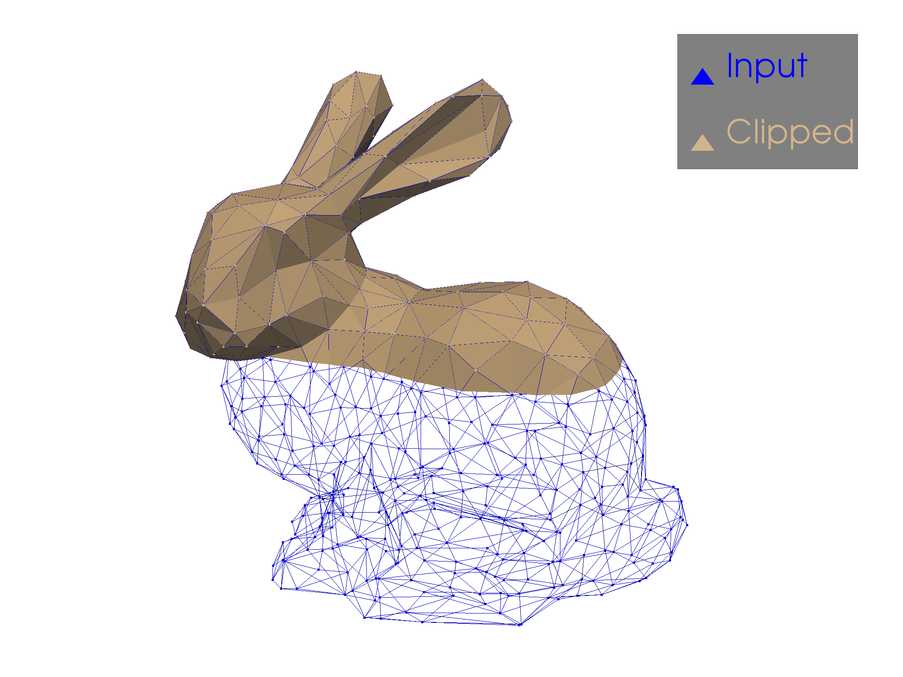
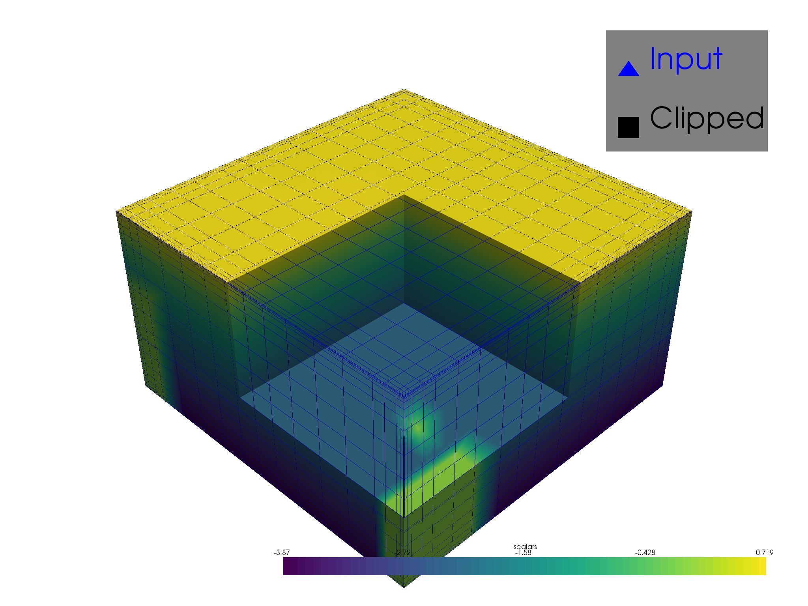
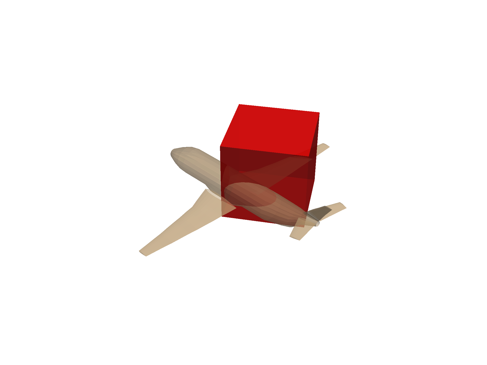
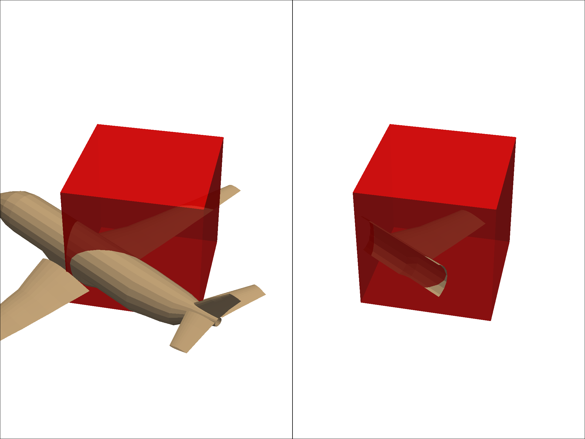

Note
Click here to download the full example code
Clipping with Planes & Boxes¶
Clip/cut any dataset using using planes or boxes.
# sphinx_gallery_thumbnail_number = 2
import pyvista as pv
from pyvista import examples
Clip with Plane¶
Clip any dataset by a user defined plane using the
pyvista.DataSetFilters.clip() filter
dataset = examples.download_bunny_coarse()
clipped = dataset.clip('y', invert=False)
p = pv.Plotter()
p.add_mesh(dataset, style='wireframe', color='blue', label='Input')
p.add_mesh(clipped, label='Clipped')
p.add_legend()
p.camera_position = [(0.24, 0.32, 0.7),
(0.02, 0.03, -0.02),
(-0.12, 0.93, -0.34)]
p.show()

Out:
[(0.24, 0.32, 0.7),
(0.02, 0.03, -0.02),
(-0.12030717544671318, 0.9323806097120272, -0.34087033043235404)]
Clip with Bounds¶
Clip any dataset by a set of XYZ bounds using the
pyvista.DataSetFilters.clip_box() filter.
dataset = examples.download_office()
bounds = [2,4.5, 2,4.5, 1,3]
clipped = dataset.clip_box(bounds)
p = pv.Plotter()
p.add_mesh(dataset, style='wireframe', color='blue', label='Input')
p.add_mesh(clipped, label='Clipped')
p.add_legend()
p.show()

Out:
[(9.862367552924386, 9.862367552924386, 8.862367552924386),
(2.25499999942258, 2.25499999942258, 1.25499999942258),
(0.0, 0.0, 1.0)]
Clip with Rotated Box¶
Clip any dataset by an arbitrarily rotated solid box using the
pyvista.DataSetFilters.clip_box() filter.
mesh = examples.load_airplane()
# Use `pv.Box()` or `pv.Cube()` to create a region of interest
roi = pv.Cube(center=(0.9e3, 0.2e3, mesh.center[2]),
x_length=500, y_length=500, z_length=500)
roi.rotate_z(33)
p = pv.Plotter()
p.add_mesh(roi, opacity=0.75, color="red")
p.add_mesh(mesh, opacity=0.5)
p.show()

Out:
[(3184.5425965677114, 2963.5691926370473, 2419.74146818026),
(896.9955291748047, 676.0221252441406, 132.19440078735352),
(0.0, 0.0, 1.0)]
Run the box clipping algorithm
extracted = mesh.clip_box(roi, invert=False)
p = pv.Plotter(shape=(1,2))
p.add_mesh(roi, opacity=0.75, color="red")
p.add_mesh(mesh)
p.subplot(0,1)
p.add_mesh(extracted)
p.add_mesh(roi, opacity=0.75, color="red")
p.link_views()
p.view_isometric()
p.show()

Out:
[(2449.232878933257, 2461.2664482691944, 1935.5516083338919),
(645.8756713867188, 657.9092407226562, 132.19440078735352),
(0.0, 0.0, 1.0)]
Total running time of the script: ( 0 minutes 14.315 seconds)